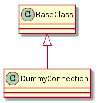
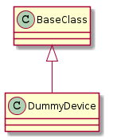

A Dummy to stand in for a real device.

DummyConnection() |
A class to act as a fake connection. |
DummyConnection._procedure_call(command, ...) |
Logs the command and arguments then returns empty strings |
DummyConnection.__getattr__(command) |
Calls _procedure call (enables the dot-notation calls) |

DummyDevice(*args, **kwargs) |
A class to configure and query linux devices | ||
DummyDevice.connection |
|
||
DummyDevice.address |
|
||
DummyDevice.mac_address |
|
||
DummyDevice.bssid |
Fake Basic service set identification | ||
DummyDevice.wifi_info |
|
||
DummyDevice.ssid |
Fake identifier for the AP | ||
DummyDevice.rssi |
|
||
DummyDevice.disable_wifi() |
Logs the fact that this method was called. | ||
DummyDevice.enable_wifi() |
Logs the fact that this method was called | ||
DummyDevice.log(message) |
|